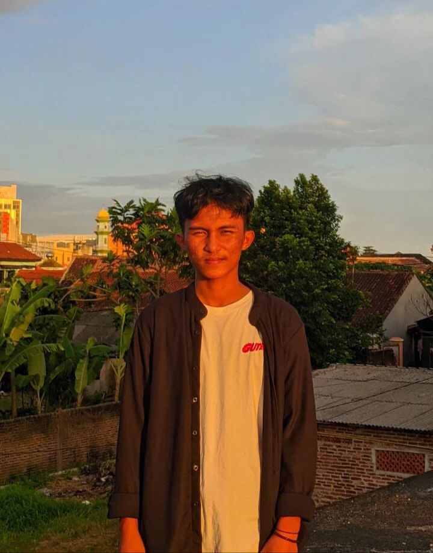

| Data Mahasiswa | ||
|---|---|---|
| NPM | 21312022 | |
| Nama Lengkap | Abror Abdul Gani | |
| Fakultas | Fakultas Teknik dan Ilmu Komputer | |
| Jurusan | Informatika | |
| Nama Kelas | IF 21 A | |
| Biodata | ||
|---|---|---|
|  | Nama Panggilan | Abon |
| Tempat & Tanggal Lahir | Tanjung Raja, 24 Oktober 2002 | |
| Jenis Kelamin | Laki-laki | |
| Hobi | Bernyanyi dan bermain musik | |